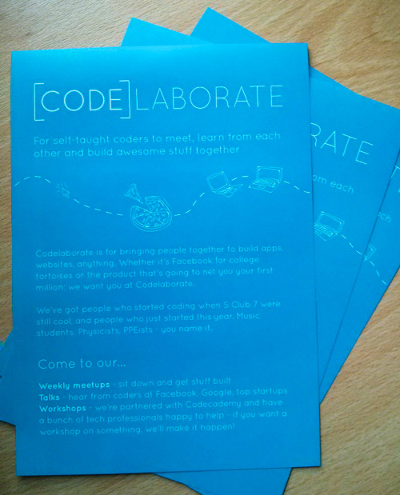
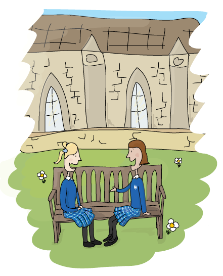
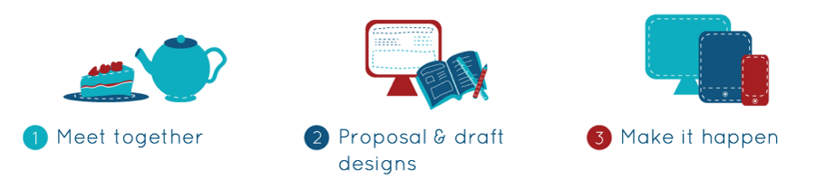
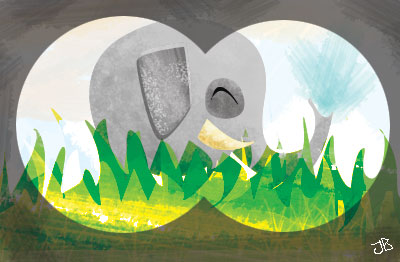
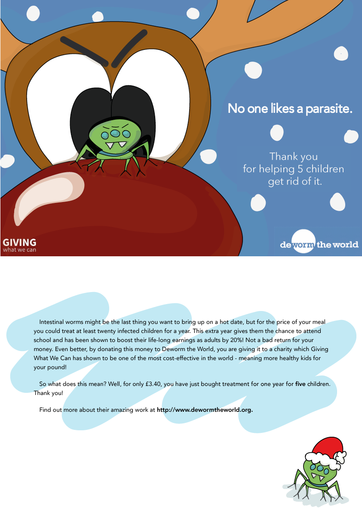
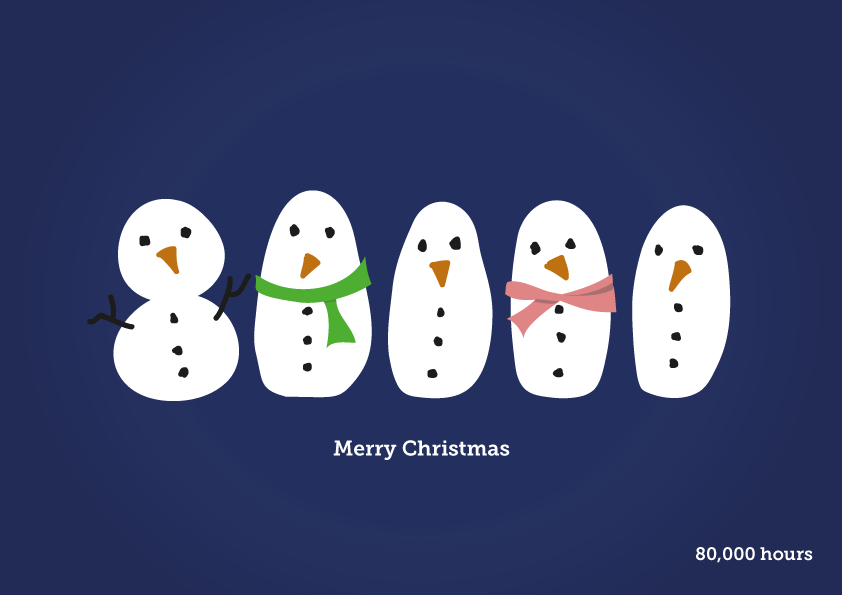
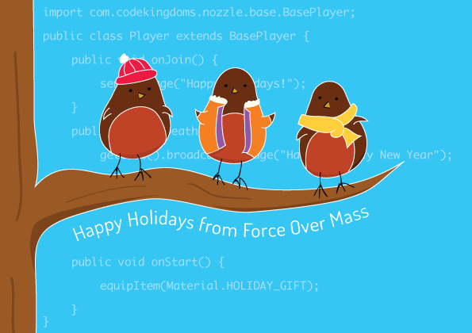

I first taught myself to code aged 11 and founded 30 Digit (formerly Idanoe Designs) aged 14. Originally branded as a 'family-run' business because no one wanted a website from a 14-year-old girl, it has now truly become a family affair with my father recently having joined the development team.
30 Digit is based in Bath, where we design and develop bespoke websites and promotional materials to fit organisations' and individuals' specific needs - all at an affordable price.
Visit 30digit.comCodelaborate helps self-taught coders at university meet up, learn from each other and work on awesome stuff together.
I designed the logo, as well as doing original illustrations used throughout marketing materials, whilst my co-founder, Alex Abrahams, and I worked on the website together. Other materials have included a set of leaflets which were reported to have consistently performed best at attracting students to Freshers Fair stands.
Visit codelaborate.org I created a series of illustrations for children's welcome packs, diaries and open day materials. The same characters were animated for a promotional video.
A set of original illustrations for the 30 Digit website, including front page graphic and explanatory process stage graphics.
Visit 30digit.com In late 2015 I took a temporary position as UX & Frontend Developer at Code Kingdoms. I lead their branding and website development with a team of 3 developers for their latest product launch, CK for Modding, as well as presenting tutorial videos for children and young people.
Code Kingdoms lets kids learn to code things they love woth a unique editor, specifically deisgned to support their progress from early drag-and-drop learning to text-based editing. Alongside the Code Kingdoms game, the Code Kingdoms editor can be used with the BBC micro:bit, which will be distributed to 1 million children in the UK.
Visit Code KingdomsIllustration in Adobe Illustrator and Photoshop.
I've designed business cards for a number of people and organisations over the years. I'm a complete Moo nerd and know their product range scarily inside out (I've won bets on features). Recently I designed these cards for Niklas Begley based on a photo he took in London. When the cards are flipped round the hand the circular cutout appears in the same position, creating a 'cut-through' effect.
I sometimes joke I'm a better photoshopper than photographer, but after renting a studio to take headshots of employees whilst working at 80,000 Hours, they turned out so well I recieved requests from people in neighbouring offices. I ended up organising two further photoshoots in Oxford and have done headshots for a wide range of people including top academics, political campaigners and website developers.
View headshots live on 80000hours.orgAn illustration from a previous iteration of my personal site. I drew the first version of this when I was 17, making a pile of all the things in my life. It was fun to revisit it to use on my personal site and see which items had changed and which I kept. The laptop had a significant upgrade, but I never did pass that driving test...
A series of original posters for music performances in Oxford.
Commissioned by Giving What We Can, I illustrated a series of Christmas cards based on the text given. I never expected to have notebook pages full of designs around parasites...all in the Christmas spirit! The designs were used for a charity Christmas card scheme in 2012 and again in 2013 where 100% of donations went to the chosen charities.
Deworm the World and the Schistosomiasis Control Initiative both fight to eradicate intestinal worms for those in poverty. This is shown to increase school attendance and earning potential and is rated by independent charity evaluators as one of the most cost-effective interventions in the world. It was great to be able to help raise money and awareness in such a fun, seasonal way!
Commissioned by 80,000 Hours, I illustrated a Christmas card to be professionally printed and sent as a seasonal 'thank you' to major donors.
Whilst working at Code Kindoms, their investor, Force Over Mass Capital, being fans of our design team, requested an illustrated holiday card as a seasonal 'thank you' to industry partners. The final design brought a technical twist to a cheery classic!
